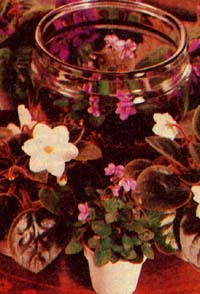
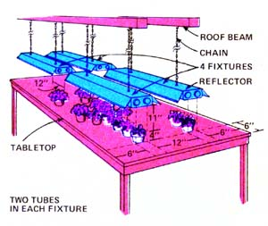
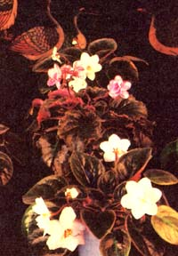

I Earn $20 An Hour...Raising Violets
By the Mother Earth News editors
January/February 1978
You can start a mini-farm right in your basement... and make good money doing it.
Beautiful, blooming African violets are really easy to grow, once you know how. They're also quite easy to sell ... especially in the winter, when so many folks are anxious to brighten their homes with pretty flowering houseplants.
Put these two factease of cultivation and active demandtogether ... and what have you got? A mighty attractive cash crop, that's what. I've found that a single 4 X 10-foot bench of African violets in the basement of my suburban Chicago home requires an average of only one-half hour of care a day ... yet, after expenses, nets me $3,696 a year. That's $20 an hour, whicheven in these inflationary timesis pretty good pay in anybody's book. And the benchful of colorful plants that I have for my own enjoyment most of the time is a nice little extra bonus that doesn't cost me a cent!
YOU CAN GROW'EM ANYWHERE!
If you're fortunate enough to live in frost-free sections of California or Florida, you can really go into the African violet business in a big way at very little cost by raising the plants outdoors in a shaded area. The rest of us can grow the violets too, of course, but we have to protect 'em from the winter's cold (frost will kill the plants). That "protection", however, is not as difficult as you might think.
African violets thrive on windowsills, in greenhouses, and under artificial lights. This gives you a lot of latitude when you're setting yourself up to grow these flowers.
Then again, If you really want to make money at home with African violets, you probably won't try to raise them on windowsills (unless you have an awful lot of windows). And, at least in the beginning, It's doubtful that you'll want to build a greenhouse just for this business until you've at least proven out the profit potential of African violets for yourself. (Besides, who can afford to beat a greenhouse with fossil fuels these days? If you do put up a greenhouse for this project, you'd be wise to make sure it's heated only with solar and other natural sources of energy.)
Which sort of narrows you down to starting your African violet business under lights. And there's nothing wrong with that at all. The plants do very well under artificial illumination ... and light gardening is an economical and easy way to raise and bloom the violets in quantity.
SPARE ROOMS OR BASEMENTS MAKE GOOD "FARMS"
Almost any spare living space in your house can be converted into an African violet garden. An "extra" bedroom or that den or sewing room that no one ever seems to use will do just fine. On the other hand, most of the small-scale commercial violet growers I know put their mini-farms in the basement. Not because the flower nurseries have to be there ... but because it's usually just easier to set up and operate the violet beds down cellar. (Plants do have to be watered, you know, and water sometimes spills over onto the floor, and such accidents generally are of far less concern in a basement.)
So let's go along with the crowd and figure that you'll locate your African violet mini-farm in the basement. This Immediately brings you face to face with the toughest question you'll have to answer: Will the growing area stay warm enough to make your plants develop and bloom as rapidly as they should?
Ambient (surrounding) air temperature in an African violet nursery should never drop below 60°F ... and you might as well forget attempting commercial propagation of the plants In any basement or room that regularly registers temperatures of 50°F or lower.
Since the daily temperature swings in a basement drop to their minimum readIng about 5 a.m., that's when you should make your temperature check. Furthermoresince "red liquid" thermometers are sometimes not as accurate as those filled with mercury (which is white) I recommend that you keep tabs on your flower nursery with one of the latter. Of course there's no need to take a reading of your plant bed's ambient temperature every day at 5 a.m. Just spot check the thermometer from time to time during the winter andas the days get colderyou should know well In advance of any approaching chill that could slow the development of your violets.
An even easierthough somewhat more expensiveway to keep track of the daily ambient temperature swings in your plant nursery is through the use of a " minimum-maximum" indicating thermometer. They're available from laboratory supply houses (Catalog No. T 2270, Scientific Products, 1210 Waukegan Rd., MeGaw Park, Ill. 60085) for about $15. By reading and resetting one of these instruments at the same time every day, you will quickly and conveniently know both the high and low ambient air temperatures for the preceding 24 hours.
Rememberfor optimum growth and bloomsthe night temperatures of your African violet mini-farm shouldn't drop below 60°F. But that doesn't mean you have to give up the idea of raising the flowers if your prospective plant nursery just misses this ideal by, say, five degrees or so. Open the basement furnace vents. Cover the windows with insulation. Try watering the plants with warm water. Anything that works is fair.
YOU GOTTA HAVE A BENCH OR TWO
Next to a certain amount of physical space, the most important thing you'll need for your violet "patch" ... is some sort of bench or benches to set it on. Luckily, there's no need for this bench (or these benches) to be anything fancy. Spike some 2 X 4's together to make a frame, brace its corners, and top with plywood or galvanized wire. Or lay a sheet or Two of plywood across some saw horses, cement blocks, or old wooden boxes. Sometimes you can even pick up tables very inexpensively at garage and lawn sales.
Personally, I like a table that has a top measuring 4 X 10 feet. This gives you 40 square feet of growing area ... which is enough for 360 violet plants, when each one is in a three- or four- inch-square pot. Bear in mind, though, that the weight of all those "little" plants -plus their pots and the watered soil in them - can add up faster than you might have thought. The idea is to get the violets up off the cold floor, raise 'em to a convenient height where you can work with them, and keep them there. Don't be too proud to put an extra pair of legs or a sawhorse under the middle of your table, if you have to, to support the weight of the plants plus pots plus soil.
LIGHTS!
After location and benches come the fluorescent lights ... which, again, you can either buy or scrounge. New, a fourfoot-long "double tube" fluorescent light fixture sells for about $11 and a "single tube" fixture for around $7. Or you can purchase less expensive fixtures without reflectors and add your own (it's important to direct the light downward onto the plants for maximum efficiency and growth).
A four-foot-long two-light fluorescent fixture is all the illumination you'll need for as many violets as you can crowd into an area measuring two feet wide and five feet long. Which means you'll need a total of four such fixtures to light an African violet bench measuring 4 X 10 feet.
Hang your lights from the ceiling with light chain or strong cord so that there is about one foot between the fixtures' "inner" tubes and approximately six inches from their "outer" tubes to the ends and edges of the table. (In other words, space the fluorescent lighting evenly across the bench.) The most important thing of all to remember about hanging your lights is that the distance from the starter plants to the fluorescent tubes should be approximately 10 inches. If your pots are four inches tall, then, the tubes should be suspended about 15 inches above the bench's surface (which allows one inch for the plants themselves).
These spacing guidelines are designed to provide a fairly uniform illumination of adequate intensity over the surface of your whole bench. When you've finished hanging the fixtures, plug them in, and, then check the uniformity of the light I across the table by holding your hand over a piece of white paper as you move it around over the bench's surface. If the shadow on the paper Is noticeably darker in some areas than others, you may want', to reposition the fixtures to even out the lighting.
The "white" fluorescent tubes that come with new fixtures do not emit exactly the portion of the light spectrum most needed by growing plants. For that reason, such tubes should be replaced with "plant growth" tubes ... such as Sylvania's Wide Spectrum(R) or Westinghouse's Agro(R). I have no idea whether one particular brand name is any better than another, although my experience with both the brands listed here has been good. You pays your Money and you takes your choice from the nearest wholesaler of electric lights.
In short: The lighting setup of your African violet miniform will probably turn out to be the most expensive part of the whole deal. If you purchase everything new, the fixtures and special fluorescent tubes can add up to about $68 or $70 (plus tax). Even though that isn't too bad when you compare the expense to the income you can realize from this little home business, there's nothing wrong with driving a hard bargain on the fixtures and tubes ... or scrounging as much of the gear as you can.
A TIMER IS OPTIONAL
Your growing violets should be illuminated by the fluorescent lights for 14 hours out of every 24-hour period. And if your basement is cold, the lights should be switched on during the chilliest part of the cycle ... say from about 6: 00 P.M. to 8:00 a.m.
In the beginningespecially if you're starting on a shoestringyou can turn the lights on and off manually. Later, though, you may want to invest in a timer that can handle this job automatically. Almost any will do and I use an Intermatic Time-All, which cost me only 10 cets.
Most of the inexpensive timers on the market (including mine) have only one controlled plug-in receptacle often for two-prong electrical plugs) ... while, as you'll recall, our 4 X 10-foot bench is being illuminated by a total of four fluorescent fixtures (the cords of which now almost universally are wired with three prong plugs).
There are two solutions to this problem: [1] You can plug a multiple-outlet female, socket into the timer's controlled socket ... and then plug four three-totwoprong adapters into that, or [2] you can plug one three-to-two-prong adapter into the timer's outlet... and then plug a three-prong junction board into the adapter
(Junction boards sell for from $7 to $30, depending on whether or not they have their own built-in circuit breakerswhich you don't need-how fancy they look, etc. ) Whichever way you go, make sure your timer and adapters and/or board and other wiring are all properly grounded and placed so they won't get wet when you water your violets.
LOTS AND SOIL
That's about It for your violet nursery's over-all physical "plant". You're ready to get down to the pots and soil you'll need for the individual flower themselves.
African violets will grow and bloom in any size pot from two inches in diameter on up. And you will want some two-inchers to propagate (grow new plants) in. The most convenient sized container though, is a pot measuring from three to four inches across . . . and you should think of that as your "standard" African violet container.
You should also know that these violets are traditionally grown in pots that are [a] round and [b] white . . . but I've found that people will buy them in [a] square and [b] green containers too. The final choice to up to you ... but, which ever way you go, remember that inexpensive, plastic pots are the most economical ones to use in this business.
Buy your African violet pots wholesale and buy a year's supply at a time. Figure that each square foot of growing space will produce about nine potted plants (in four-inch containers) four times a year. This meansfor a 4 X 10-foot benchthat you'll need a total of 1,440 (120 dozen) four-inch pots to run you through a full 12-month cycle. You may also want to purchase the same number of two-inchers to start your plants in it you decide to propagate violets from leaf cuttings.
It really isn't difficult to buy these containers wholesale. Just contact the garden product suppliers in your telephone book, tell them you're going to be raising plants and buying supplies on a commercial basis, and ask for commercial prices. You should be able to purchase three- to four-inch white or green pots for from three to ten cents each, and two-inch propagating pots will cost you only a penny or two each in quantity.
And maybe you won't even have to buy your pots at all! Some commercial growers make a habit of using their smaller propagation containers once and once only before throwing them out, Such pots, obviously, can be yours for the asking. If you chance across such a source of supply, however, do thoroughly wash the used containersinside and outwith soap and water to kill any harmful disease germs, bacteria, or parasites that might be transmitted to your violets.
Violets will grow in many different kinds of soil, but they prefer a loose and easily drained medium. You'll save money if you whip up your own ... and a good mix is made from two parts topsoil, one part sand, one part vermiculite, and one half part peat moss .
You can dig the topsoil yourself front any area where the ground Is fertile and no chemical herbicides have been used to kill weeds. Or, if you have no access to such a spot, you can purchase the soil from a garden supply company. . . not a retail store. (Retail stores have pretty displays and small amounts of stock at high prices. Garden supply houses have dusty old displays and large amounts of stock at low prices.)
The sand (make sure you buy only slat, free sand), vermiculite, and peat moss should also be purchased wholesale from a garden supply company. Buy a bag of each (that's the least you can purchase wholesale and you'll probably use it all up sooner than you expect anyway). And do make sure you get either "brown Canadian" or "German" peat moss . . . the fine, black peat moss from Michigan is too acid and should not be used on violets.
I find it most convenient to just pour out two bags of soil, one sack each of sand and vermiculite, and a halfbag of the peat moss onto my basement floor , . . and then turn the whole pile with a shovel until it's thoroughly mixed. Once prepared and rebagged, of course, it last forever and I have only to dip out a potful or more of the preparation as I need It,
The photo in the middle of this page is courtesy of terVehn Interiors, Flat Rock Carolina... a decorating firm that frequently brightens its clients' rooms with African violets which it has grown itself. To the right are patented "Ballet" violet starts sold by George J. Ball, Inc.... and 10-week-old blooming plants grown from them. Another of Mrs. Fink's growing benches is shown immediately above... and the lovely display of violets to the Fight is, again, courtesy of terVehn Interiors, Inc., Flat Rock, North Carolina.
STARTER PLANTS
Did you know that a plant can be patented? Well it can, and the very best African violets sold by firms such as George J. Ball, Inc. (P.O. Box 335, West Chicago, Illinois 60185, telephone 312-231-3500), are all patented. This means that before one of these companies will sell you any of its patented e starts, you will be required to sign an agreement which states that you will not propagate any new plants from the starters in sends you.
It's all rightin other wordsfor you to buy these patented starts, raise them up, and then sell them ... but it's definitely not all right for you to buy the patented starts, raise them, start more plants from leaf cuttings taken from the original starts, and then sell the propsgated plants.
If this restriction cramps your style too much, you'll be better off dealing with commercial suppliers of unpatented African violets. There are severalincluding Fisher Greenhouses, Linwood, N.J. 08371 and Tinarl Greenhouses, 2325 Valley Rd., Box 190, Huntington Valley, Pa. 19006and you should have no trouble finding a source of unpatented starts that you enjoy dealing with.
And if you're launching your new business on real shoestring, there's a lot to be said for growing your original "mother" plants from leaf cuttings taken from a friend's favorite unpatented African violet ... cultivating the parent stock ... and then propagating a regular supply of starts from their leaves. You'll spend a little more time getting your enterprise rolling this way . . . but a lot less money. And, once you are underway, you'll always make more profit on any plant you sell that you propagated yourself (for free) instead of bought from a supplier.
But let's say that you can afford to buy your first starts and you want to get into the African violet business as quickly and as easily as possible. Contact the supplier of your choice for current availability and prices of starts (the going price, by the wayat least for patented varietiesincludes a colorful plastic name tag for each little plant). You will usually have to cover any shipping charges yourself, too, so make sure you know what it's going to cost to get the starts to you. (Air Express is the most expensive way to transport the plants. Truck and/or rail delivery is less costly and generally quite satisfactory.)
WHEN TO ORDER YOUR STARTS
FACT ONE: The best time to sell blooming African violets is just before a holiday. (A fall, winter, or spring holiday. A certain number of the flowers can be sold during the summer too, of course, but not as many as will move during the other three seasons.) The best holidays of all for violet sales, I've found, are Christmas (red and white blooms), Valentine's Day (red, white, and pink)
Mother's Day (all colors), and Memorial Day (all colors). The heaviest buying of plants usually begins about one to two weeks before the actual holiday, and continues right up to the last possible moment. Some forgetful people even make their purchases after the Big Event.
FACT TWO: If your illuminated indoor garden's nighttime temperature drops no lower than 68 to 70°F, your little starts should mature and develop blooms about ten to twelve weeks after you receive them. And if you don't sell them all the first time you put them on the market, you can just keep the leftovers going and they should bloom again within another four to eight weeks.
Put these two facts together and it's easy to see that you should order your starts so you'll receive them 12 to 14 weeks before Christmas, Valentine's Day, etc. And, since such days (and the Immediate periods leading up to them) are the best but certainly not the only times that folks buy blooming African violets, it's also obvious that any plants you have left over from a holiday should be put back on the market when they bloom again a month or two later.
TRANSPLANT YOUR STARTS
As soon as the starter plants arrive you should take them right into the basement, open the box, and transplant them as soon as possible. Fill as many four inch pots as necessary each twothirds full of your prepared soil mix. Thenusing a spoon, small trowel, or knifegently transfer one start from the shipping tray into each of the containers.
Try not to disturb the roots or break any of the leaves off the little plants as you pot them. Then pour some of the soil mixture around each of the starts until Its crown (the place where the leaves come out) is just covered. Gently firm the growing medium by pressing it downagain, gently around the tiny plant's base. Then give the little violet a drink and add more soil if necessary.
ON THE SUBJECT OF WATER
You can use almost any water on your violets as long as it [1] is not artificially softened, and [2] is not too cold. Softened water is not good for plants and cold water can slow the growth of your violets. For very best results, then, I recommend rainwater that has been warmed to about 80°F. [Editor's note: It's not as difficult or as expensive inmost cases as it might sound to meet that requirement. Just run the water off your homes roof into a barrel thats painted black on the outside and allowed to sit in the sun.] The extra warmth will speed blooming and is one way to help overcome a slightly-lower-than-optimum basement temperature.
For best results, the soil around your violets should be kept slightly moist at all times. Push a finger about an inch deep into the potting mixture in one of the containers. If the medium feels moist, try again tomorrow. If it feels dry, water your plants. As you gain experience in this business, you'll notice that neither a small African violet plant nor the plastic pot or medium it's grown in weighs very much when compared to a measured amount of water. This means that you should soon develop the knack of "hefting" one of the potted plants and knowing whether or not it needs water strictly by how heavy it feels.
The best time to give your African violets a drink is just after the lights over the plants are turned on. (If you take care of this chore when the lights are on, the plants seem better able to resist the harmful effectstem rotof too much water.) Thoroughly moisten the soil in each little container without actually flooding It.
Large commercial growers sometimes use overhead sprinklers on their violets and while the water from such sprinklers may spot the plants' leaves, it doesn't really hurt them. A watering can or a hose with a fine nozzle is all you'll need for your tabletop operation. Don't worry about an occasional splash onto the leaves of the plants. Do, however, take care to keep the water away from all electrical outlets, cords, and fixtures ... do use warm water ... and do guard against overwatering.
And yes: When you water your plants some of the liquid will run through the pots onto your table. This shouldn't hurt anything but, if you want to keep the water off the bench, you can set the containers into metal trays, cookie sheets, old dishpans, or any other scrounged-up "water catchers" you can find. Bear in mind, however, that African violets do better when they're allowed to drain freely. The plants don't like to stand in water (but then, outside of ducks, who does enjoy wet feet?). So. for best results, just expect a little water to drain onto the table and drip off onto the floor whenever you give your violets a drink. Figure that it'll help raise the humidity in your African violet nursery ... which will be good for both you and the plants.
THAT'S THE "HARD" PART ... HERE'S THE PAYOFF!
After following the above instructions for eight weeks, you should see your growing plants sprouting well-defined and easily recognized buds from their crowns. And no more than four weeks after that, the African violets should be in glorious bloom and ready to sell. It's time to cash in on your work!
You'll realize the highest possible price if you sell the violets direct to the public. So spread the word around. Tell friends and neighbors that you have blooming African violets for sale. Tack up some notices on supermarket and laundromat bulletin boards. Put a sign in your yard or on the front door. I've found that I can sell most of the violets I raisedirect to the final consumer at about $3.00 a potmerely by "getting the word out".
Leftovers from these direct selling effortsor larger quantities of the plants raised specifically for resale through florists, seed stores, supermarkets, variety stores, and other outletsalways seem to sell quite well wholesale (currently at a price of $1.35 to $1.50 per plant).
Folks who purchase African violets directly from you one or two at a time are generally happy to carry them home "as is". For mass wholesale deliveries, though, you'll want to wrap each plant in a sleeve of clear plastic or a taped or stapled cone of paper (to keep their leaves from breaking off in transit) before packing the pots of violets as securely as possible in cardboard boxes. The plastic sleeves (if you decide to go for "professional" packaging) are available from florist supply companies for about two cents each.
I've found that I can growas mentioned before in this article360 plants at a time on a 4 X 10foot bench ... and I can turn my "crop" over four times a year. That's a total of 1,440 African violets a year ... which I sell for $3.00 each ... for a gross income of $4,320.
When I subtract an average cost of 32 cents each for starter plants, 5 cents and 2 cents - respectively the pots and plastic sleeves I use, and 1 cent! for the soil mix that goes with every violet (a total of 40 cents per plant, or $576 in all) ... that still leaves me with $3,744. And even when I further deduct the electricity used in growing the plants ($24 a year) plus a reserve for replacement of the fluorescent tubes (another $24 annually) ... I'm left with a net profit of $3,696 per year per 4 X 10-foot table of African violets. Which ain't bad.
Or, looking at the financial picture from an entirely different angle, I find that preparing soil mixes, potting up, watering, and marketing my flowers takes an average of only about 30 minutes a day. That's 182.5 hours a year and 182.5 hours into $3,696 figures out to a rate of pay of about $20 an hour. Which, again, ain't shabby at all ... especially when you remember that I set those hours at my own whim right in the privacy of my own basement. There are worse ways to net $3,696 a year!
GOIN' FOR BIGGER BUCKS YET
Obviously, since I seem to be a long way from saturating my potential market, I can double or triple the above net figure by doubling or tripling the number of violets I raise. That's because I've already taken the time to analyze my customers' preferences, record the varieties and colors (by season) of African violets which sell best here in my section of Chicago, and otherwise "psych out" the local market.
The longer I'm in this part-time business, in other words, the easier it gets to concentrate on exactly the varieties and colors of violets that will bring me the maximum return on my investment of capital, space, and time. Go ye and do likewise.
And if you feel that you need more information about growing violets before you plunge into this business, a check of any good library and/or bookstore will show you that there are several books available on the subject. Probably the best of the lot is Helen Van Pelt Wilson's African Violet Book ($4.95) published by Hawthorne Books, Inc., 260 Madison Ave., New York, N.Y. 10016.
HOW TO GROW VIOLETS FROM CUTTINGS
Although you'll find yourself in deep trouble if you try to propagate your own African violets from a Patented strain of the plants, it's entirely acceptable for you to propagate the flowers from any of the unpatented varieties. You'll also increase the profitability of your operation if you "grow yery own" starts, instead of purchase them.
It's not difficult to propagate violets from cuttings. Simply cut a leaf-stem and all-from one of the plants with a sharp knife, place it in a dish, and cover the stem with water. Then keep the stem covered with water and in dim light (on, say, a side bench next to your Illuminated main bench). Roots should begin to form within a month.
Once there are several roots on the developing plant, place it in a two-inch pot filled with the same mixture of soil that's described in the accompanying article. Keep the medium slightly moist at all times. It may even be desirable to cover the container holding the soil and starter plant with clear plastic to "hold" the humidity and reduce the need for frequent watering.
Within three months, new little leaves will appear at the bass of the "mother", leaf. When about four of the baby leaves have popped out, it's time to transplant the start into one of your larger pots. Gently knock and pry the little plant and its ball of soil loose, set them into one of the bigger containers that's been half-filled with growing medium, and fill in around the transplant (as discribed in the accompanying article) with more of the soil mix. Water, and keep the start slightly moistbut not wetat all times.
It does take longer to propagate your own African violets from cuttinp and raise them for market than it take$ to grow the plants from purchased starts. But, by "bringing the whole operation under your own roof", you can add another $460.80 per year to your profit picture for every 4 X 10-foot main bench of growing space In your nursery. It's up to you to decide if the extra money is worth the time and effort.PSD.
 Beautiful African violets like the ones shown to the left are grown by Mrs. Mary Fink of Hendersonville, North Carolina in the simple, straightforward setup pictured immediately below. Mrs. Fink raises the flowers in her basement and sells them from a booth at the indoor ""curb market"" which is open three mornings each week in MOTHER's own little mountain town. Note the differences as well as the similarities between Mrs. Fink's operation and the drawing of Phillip S. Duke's own African violet growing bench in Chicago. |
 |
|
|
 |
 |
|